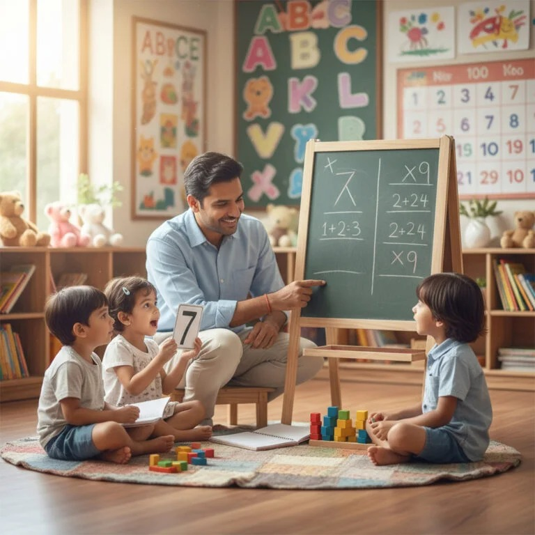
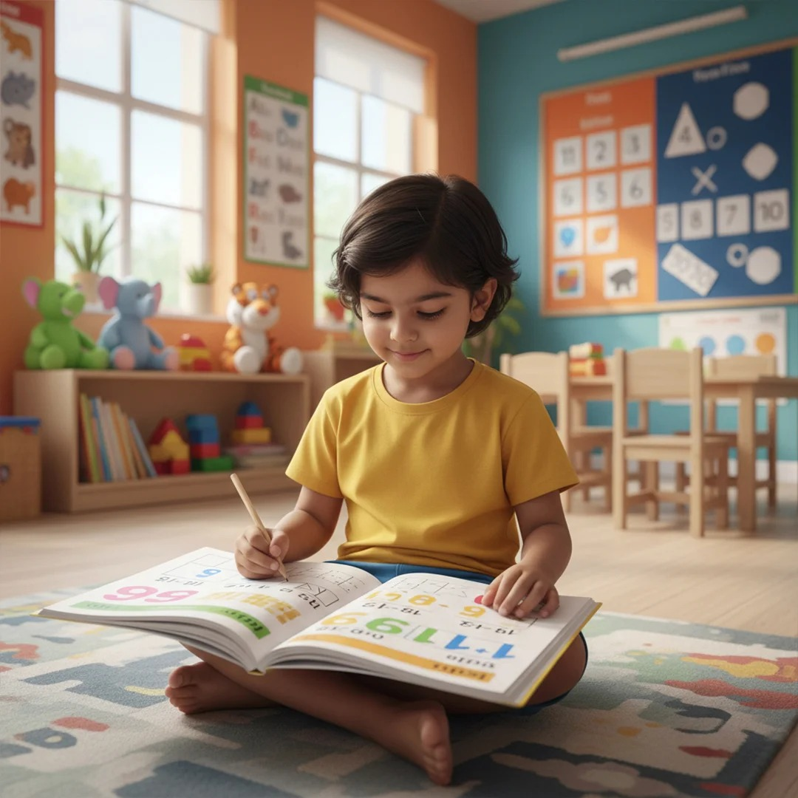
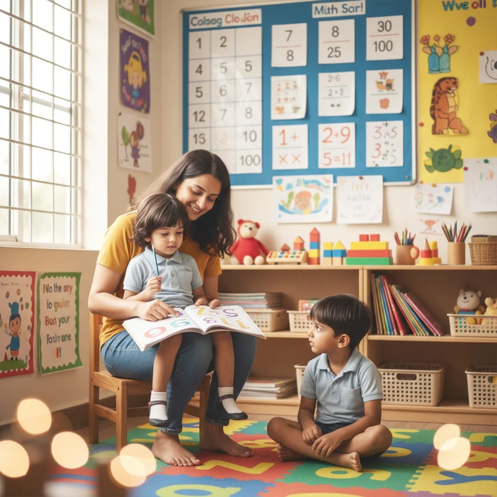

Our ProgramSkill Orbit Vedic Maths Program
The Vedic Maths Program introduces children to ancient Indian techniques for rapid mental calculation. It helps develop mathematical agility, encouraging children to solve problems efficiently without over-reliance on calculators.
Enroll Now!
Key Features
What Your Child Will Learn

- Learn 16 simple Sutras (techniques) for fast calculations
- Focus on mental computation, patterns, and shortcuts
- Interactive problem-solving sessions with fun challenges and exercises
- Designed for enhancing logical and analytical thinking
Benefits for Children
How This Program Helps Your Child Grow

- Speed and accuracy in arithmetic calculations
- Strengthened critical thinking and problem-solving skills
- Improved memory, focus, and concentration
- Increased confidence in schoolwork, competitions, and exams
Program Structure
How the Program Is Designed

- Structured learning from basic to advanced levels
- Regular practice sessions and assessments to track progress
- Hands-on approach to develop mental agility
Keep exploring
More Learning Programs
Explore more activity-driven learning modules for young minds.
Outcome
What Your Child Achieves
Children completing the Vedic Maths Program gain strong mathematical intuition, quick calculation abilities, and analytical thinking, helping them excel academically and in day-to-day problem solving.